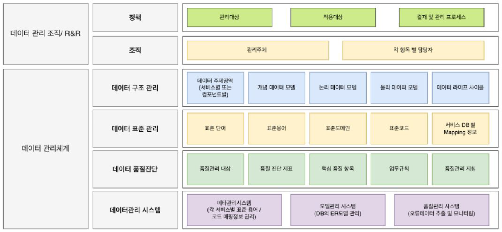

Data Governance Study
개념 및 업무 절차에 대한 리스트
데이터 거버넌스에 대한 체계적인 지식 정리와 업무 절차 이해를 위한 항목
1 데이터 거버넌스 기초
- 조직의 데이터 관리를 위한 핵심적인 프레임워크
- 프레임워크란?
- 특정 문제나 도메인에 대한 구조화된 접근 방식을 제공하는 개념적인 구조
- 문제 해결을 위한 가이드라인, 원칙, 모범 사례를 제시
- 프레임워크란?
- 조직 전체의 데이터 관리 전략과 실행 방법을 다룬다. 즉, 개념적, 전략적 접근 방식
- 최종적으로, 조직의 정책, 프로세스, 문화 등에 반영되어야 한다.
1.1 데이터 거버넌스의 정의
- 데이터 거버넌스는 조직 내에서 데이터의 가용성, 유용성, 무결성, 보안을 보장하기 위한 정책, 절차, 표준을 수립하고 실행하는 과정이다.
- 이는 데이터를 비즈니스 자산으로 관리하고 활용하는 체계적인 접근 방식이다.
- 데이터 거버넌스 구조

1.2 데이터 거버넌스의 기대효과
거버넌스는 기술 구현 목적이 아니라 비즈니스 전략의 핵심 요소로 자리 잡아야 한다.
- 데이터 품질 향상: 고품질 데이터는 정확한 분석과 신속한 비즈니스 의사결정의 기반이 된다.
- 잘못된 데이터로 인한 비용 감소
- 고객 만족도 증가
- 운영 효율성 개선
- 규정 준수 및 리스크 관리: 데이터 관련 법규(예: GDPR, CCPA)를 준수해야 함
- 법적 제재 및 벌금 회피
- 기업 평판 보호
- 고객 신뢰 증진
- 법적 제재 및 벌금 회피
- 운영 및 개발 효율성 증가: 체계적인 데이터 관리는 업무 프로세스를 최적화
- 개발 생산성 형상: 표준용어와 구조 정보를 관리하여 데이터 이해도 증가
- 중복 작업 감소
- 데이터 검색 및 활용 시간 단축
- 부서간 협업 증진
- 유지보수 효율성 향상
- 평균 30~60% 이상의 비용, 공수, 기간 효율 제고
- 비즈니스 목표 달성 및 노동 생산성 향상에도 기여함
- 데이터 보안 강화: 민감한 데이터를 보호하고 무단 접근을 방지해야 함
- 데이터 유출로 인한 손실 예방
- 고객 및 파트너 신뢰 유지
- 지적 재산권 보호
- 비즈니스 인텔리전스 및 분석 개선: 일관되고 신뢰할 수 있는 데이터는 더 나은 분석을 가능하게 함
- 시장 트렌드 신속 파악
- 고객 인사이트 향상
- 예측 분석의 정확도 증가
- 데이터 자산의 가치 극대화
- 데이터를 전략적 자산으로 관리
- 데이터 기반 신규 비즈니스 모델 창출
- 데이터 monetization 기회 발굴
- 데이터 판매: 수집한 데이터를 다른 기업이나 연구기관에 직접 판매
- 데이터 접근권 판매: API나 구독 모델을 통해 데이터 접근권을 제공
- 제품/서비스 개선: 데이터를 활용해 기존 제품이나 서비스를 개선
- 맞춤형 마케팅: 고객 데이터를 활용한 타겟 마케팅으로 매출 증대
- 운영 효율성 개선: 내부 데이터 분석을 통한 비용 절감
- 비용 절감: 효율적인 데이터 관리는 여러 영역에서 비용을 절감
- 데이터 저장 및 관리 비용 최적화
- 데이터 관련 오류 수정 비용 감소
- 중복 시스템 및 프로세스 제거
1.3 데이터 거버넌스의 목적
- 데이터 품질 향상
- 데이터 보안 및 규정 준수 보장
- 의사결정 프로세스 개선
- 운영 효율성 및 생산성 증대
- 데이터 기반 혁신 촉진
1.4 핵심 구성 요소
- 데이터 표준
- 데이터의 일관성을 유지하기 위한 규칙과 가이드라인
- 데이터 정책
- 데이터 보안 및 프라이버시 정책
- 데이터 생명주기 관리 정책
- 데이터 흐름도와 데이터 계보(lineage) 관리를 통해 데이터의 전체 생명주기를 명확히 파악
- 데이터 품질 기준
- 데이터의 정확성, 완전성, 일관성, 시의성 등을 관리
- 데이터 구조
- 데이터의 조직화, 저장, 관리 방식을 정의하는 아키텍처와 모델링
- 조직 및 역할
- 데이터 거버넌스 위원회
- 데이터 소유자 (Data Owner)
- 데이터 관리자 (Data Steward)
- 데이터 사용자
- 프로세스
- 데이터 품질 관리 프로세스
- 메타데이터 관리 프로세스
- 데이터 접근 및 공유 프로세스
- 기술
- 데이터 카탈로그
- 데이터 품질 도구
- 메타데이터 관리 도구
- 주요 원칙
- 책임성: 데이터에 대한 명확한 소유권과 책임을 정의
- 투명성: 데이터 관련 프로세스와 결정을 투명하게 관리
- 무결성: 데이터의 정확성과 일관성을 유지
- 보안: 데이터를 안전하게 보호하고 적절한 접근 제어를 실시
- 규정 준수: 관련 법규와 업계 표준을 준수
- 가용성: 필요한 사람이 필요한 시점에 데이터에 접근할 수 있도록 함
- 효율성: 데이터 관리 프로세스를 최적화하여 비용 효율성을 높임
- 구현 단계
- 현황 평가: 현재의 데이터 관리 실태를 분석
- 전략 수립: 조직의 목표에 맞는 데이터 거버넌스 전략을 수립
- 정책 및 표준 개발: 필요한 정책과 표준을 개발
- 조직 구성: 데이터 거버넌스를 위한 조직 구조를 설계하고 역할을 할당
- 프로세스 구현: 데이터 관리 프로세스를 설계하고 구현
- 기술 도입: 필요한 데이터 관리 도구를 선택하고 도입
- 교육 및 변화 관리: 조직 구성원들에게 필요한 교육을 제공하고 변화를 관리
- 모니터링 및 개선: 지속적으로 성과를 모니터링하고 개선
- 도전 과제
- 조직 문화 변화의 어려움
- 다양한 이해관계자 간의 조정
- 레거시 시스템과의 통합
- 지속적인 투자와 관심 유지
1.5 데이터 비표준화 문제점
- 의사결정 품질 저하
- 부정확하거나 불완전한 데이터로 인해 잘못된 결정을 내릴 수 있다.
- 시의적절한 데이터 접근이 어려워 기회를 놓칠 수 있다.
- 운영 비효율성
- 중복되거나 일관성 없는 데이터로 인해 작업 시간이 증가
- 부서간 데이터 공유와 협업이 어려워진다.
- 시간이 지남에 따라 비표준화된 데이터는 계속 누적되어 악순환에 빠짐
- 규정 준수 리스크 증가
- 데이터 관련 법규(예: GDPR, CCPA) 위반 가능성이 높아진다.
- 감사 대응이 어려워지고, 이로 인한 법적 제재나 벌금 위험이 증가
- 신뢰 상실
- 데이터 구조와 정의가 불명확하여 데이터의 신뢰성이 떨어짐
- 부정확한 고객 데이터로 인해 서비스 품질이 저하될 수 있다.
- 데이터의 내용과 형식이 불분명하여 데이터 해석이 어렵습니다.
- 개인정보 유출 위험이 증가하여 고객 신뢰를 잃을 수 있다.
- 재무적 손실
- 잘못된 데이터로 인한 전략적 실패로 재무적 손실이 발생할 수 있다.
- 데이터 오류 수정에 많은 비용과 시간이 소요
- 일관성 없는 명명 규칙으로 인해 데이터 이해와 통합이 어려워짐
- 즉, 높은 의사소통 비용과 생산성 저하
- 경쟁력 약화
- 낮은 데이터 품질로 의사결정의 정확도와 신속도가 저하됨
- 데이터 기반 혁신이 어려워져 시장에서 뒤처질 수 있다.
- 고객 인사이트 부족으로 시장 변화에 대응하기 어려움
- IT 시스템 복잡성 증가
- 일관성 없는 데이터 구조로 인해 시스템 통합이 어려워진다.
- 레거시 시스템 유지 비용이 증가
- 데이터 보안 취약성
- 데이터 접근 통제가 제대로 이루어지지 않아 보안 위험이 증가
- 중요 데이터의 위치나 중요도를 파악하기 어려워 적절한 보호가 어렵다.
- 분석 및 AI/ML 프로젝트 실패
- 데이터 통합 실패 및 부족으로 모델링 불가
- 낮은 품질의 데이터로 인해 분석 결과의 신뢰성이 떨어진다.
- AI/ML 모델의 성능이 저하되거나 편향된 결과를 도출할 수 있다.
- 조직 문화 악화
- 데이터에 대한 불신으로 인해 데이터 기반 문화 형성이 어렵다.
- 부서간 데이터 사일로로 인해 협업이 저해
- 비즈니스 기회 상실
- 데이터의 전략적 가치를 활용하지 못해 새로운 비즈니스 모델 개발이 어렵다.
- 데이터 monetization 기회를 놓친다.
- 리소스 낭비
- 중복된 데이터 저장 및 관리로 인해 불필요한 비용이 발생
- 데이터 검색과 정제에 많은 시간을 소비.
- 데이터의 위치와 저장 방식이 일관되지 않아 필요한 데이터를 찾기 어렵다
- 데이터 계보 추적 불가
- 데이터의 생성, 이동, 변환 과정이 불분명하여 데이터 계보 추적이 어렵다.